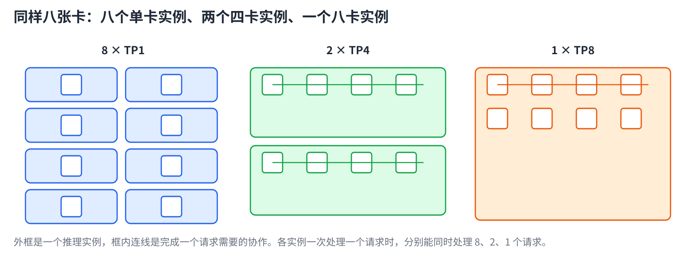
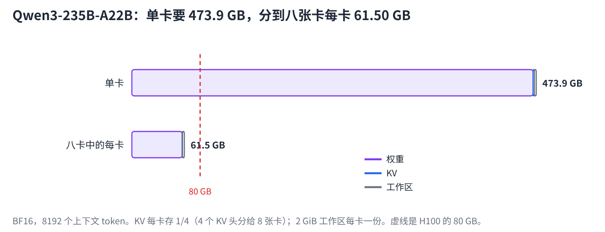
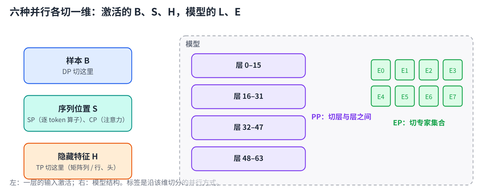
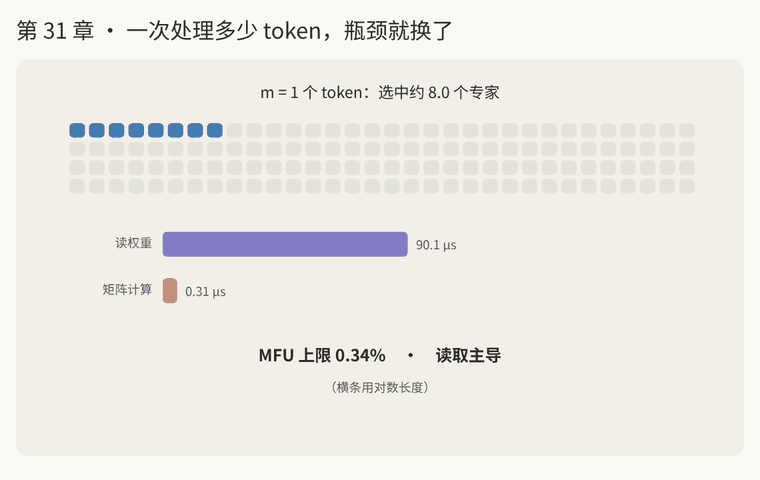

第 31 章 · 从单卡到多卡：放得下、算得快、接得多
本地运行
git clone https://github.com/wikieden/ai-infra-from-constraints
cd ai-infra-from-constraints/code/notebooks
pip install jupyterlab torch numpy
jupyter lab ch31_multi_gpu.ipynb也可以下载后直接用 VS Code 打开 .ipynb 运行。需要 GPU 的章节在 Colab 里选「代码执行程序 → 更改运行时类型 → GPU」。
本章回答：一个模型为什么要用八张卡？是因为放不下、算得慢，还是请求太多？Qwen3-235B-A22B 分到八张卡后，每张卡装多少、每步读多少？decode、prefill、训练对多卡的要求有什么不同？六种并行各切哪一维？
讲解日期：2026-11-24 · 上一章：第 30 章 从局部优化到完整请求 · 下一章：第 32 章 数据、张量、序列并行
对应原文：materials/ai-infra-book/manuscripts/06-超节点.md章首 L1–L7、§6.1 L9–L124（图 6-1 到 6-3）
本章缩写：DP / TP / SP / CP / PP / EP = Data / Tensor / Sequence / Context / Pipeline / Expert Parallelism（数据 / 张量 / 序列 / 上下文 / 流水线 / 专家 并行）· HGX = NVIDIA 的八卡服务器底板 · NVSwitch = 组织 NVLink 交换网络的交换芯片。全部缩写见 缩写与术语表
第 5 部分把一个矩阵切成小块，让输入在一张卡里多用几次。现在把其中一块交给另一张卡：这张卡要哪些输入、算出的是完整输出还是部分和、结果交给谁？数学没变，原来走共享内存的数据，现在要穿过加速器互联甚至机房网络。
本部分的硬件是 HGX H100：八张 H100 SXM，每张 80 GB、3350 GB/s、BF16 989.4 TFLOP/s；八卡经 NVSwitch 用 NVLink 4 互联，每卡每方向 450 GB/s；每卡另配一张 400 Gbit/s（50 GB/s）网卡连别的服务器。
讲解
第一步：用更多卡的三个理由（2026-11-24）
类比：搬家。 东西太多一辆车装不下（容量）；赶时间要几辆车一起跑一趟（延迟）；要搬的人家太多，就多派几辆车各跑各的（吞吐）。
原文 L13–L21：推理实例描述模型怎么部署和执行，超节点描述加速器怎么互联。同样八张卡：
- 八个单卡实例：同时处理八个互不相干的请求；
- 两个四卡实例：每个请求要在四张卡之间交换中间结果；
- 一个八卡实例：八张卡合力做一个请求。

图 31-1 · 外框是一个实例，内部连线是完成请求所需的协作。
三个理由对应三个目标：权重超过单卡内存（容量）、单个请求太慢（延迟）、同时到来的请求太多（吞吐）。
一句话：先问清楚是放不下、跑得慢还是接不过来；三个问题的答案不是同一种分法。
第二步：Qwen3-235B-A22B 放到八张卡上（2026-11-24）
类比：一套百科全书分给八个书架。 每个书架只放八分之一，但每个书架都要放一本目录（归一化参数、路由器），还要留一块空地翻书（工作区）。
容量约束（原文 L27–L33）：
权重、KV、激活、工作区共用一张卡的内存。
算例（原文 L35–L52）：94 层，隐藏 4096，64 个查询头、4 个 KV 头，头维 128；128 个路由专家选 8 个，每个专家中间维 1536。BF16。
| 放置 | 权重 | KV（8192 token） | 工作区 | 合计 |
|---|---|---|---|---|
| 单卡 | 470.2 GB | 1.58 GB | 2.15 GB | 473.9 GB（H100 的近 6 倍） |
| 八卡每卡 | 58.96 GB | 0.39 GB | 2.15 GB | 61.50 GB |
- 只有 4 个 KV 头：八卡时每两卡共用一个 KV 头、各存一份，每卡存 KV 的四分之一。
- 每卡权重略多于 470.2/8：归一化参数和路由器每卡一份。
- 每卡还剩约 18.5 GB：再放 47 个这样的 8K 会话。

图 31-2 · 分散存储降低每卡需求；实例总占用是各卡之和（约 492 GB）。
单步时间（原文 L58–L66，式 6-2，即第 24 章的 roofline）：
一层专家，单 token 选 8 个：读 \(8 \times 3 \times 4096 \times 1536 \times 2 = 288\) MiB 要 90.1 μs，算约 3.02 亿 FLOPs 只要 0.31 μs：MFU 上限约 0.3%，是 batch 1 的硬件上限，与实现好坏无关。全模型一步读约 43.1 GB 权重 + 1.58 GB KV：单卡 13.3 ms，八卡每卡约 5.78 GB、1.73 ms。
一句话：多卡首先解决放得下；单 token 时间几乎全在读权重，切分的价值在于让每张卡少读。
第三步：decode、prefill、训练要的不一样（2026-11-24）
类比：同一辆车跑两种路。 送一份快递（decode）时间都花在路上（读权重）；拉满一车货（prefill）时间都花在装卸（计算）上。
原文 L70–L76：
| decode 1 token | prefill 8192 token | |
|---|---|---|
| 一层专家权重读取 | 288 MiB，90.1 μs | 128 个专家全中，4.5 GiB，1.44 ms |
| 矩阵运算 | 0.31 μs | 约 2.47 TFLOPs，2.50 ms |
| 谁更慢 | 读权重 | 计算 |
| 每次交换的隐藏张量 | 8 KiB | 64 MiB |
- 交换次数相同、每次数据量差 8192 倍：小数据看启动开销，大数据看带宽（第 22 章的 \(\alpha + V/R\)）。
- decode 有时间依赖：单个会话只能逐步推进；会话越多，权重复用越多，KV 容量和读取也越多。
- 训练多了反向和梯度同步，激活要留到反向用完（第 10 部分）。
一句话：decode 小、频繁、受读取限制；prefill 大、受计算限制；同一套切分在两种形状下的代价不同。
第四步：六种并行各切一维（2026-11-24）
类比：俄罗斯套娃。 最外层分请求（DP），一份请求沿层推进（PP），进到某一层再按专家（EP）、按特征（TP）、按序列位置（SP、CP）分。
原文 L80–L113：一层的输入激活有三维：样本 \(B\)、序列位置 \(S\)、隐藏特征 \(H\)；模型结构还有层 \(L\) 和专家集合 \(E\)。
| 并行 | 切哪一维 | 每卡保存和计算 | 卡之间必须交换 | 主要针对 |
|---|---|---|---|---|
| DP | 样本 \(B\) | 一份完整模型、不同样本 | 推理不交换；训练汇合梯度 | 吞吐 |
| TP | 特征 \(H\)（矩阵列 / 行、注意力头） | 同一层矩阵的一部分 | 输出分片收集；部分和相加 | 层内矩阵、单请求 |
| SP | 逐 token 算子的位置 \(S\) | 同一序列一段位置 | 进矩阵乘前收齐；部分和求和后重新分片 | TP 组里的激活 |
| CP | 注意力的位置 \(S\) | 一段位置的 Q、K、V | 远端 K、V 或注意力统计量 | 长上下文 |
| PP | 层 \(L\) | 一段连续的层 | 相邻阶段交接激活 | 层数、权重容量 |
| EP | 专家 \(E\) | 一部分专家 | token 送到专家所在卡，再送回 | MoE 专家集合 |

图 31-3 · 左边是一层的激活，右边是模型结构。虚线是切的位置，不是数据流向。
两类结果：沿样本、位置、层、专家切，各卡负责不同数据，结果收集或交接；沿特征切，各卡贡献同一个输出的一部分，结果要相加（第 26 章的输出维 vs 归约维）。组合时写成 DP2×PP2×TP4 = 16 张卡；SP 在 TP 组内用同一批卡，不再多乘一个因子。
DP 的吞吐账（原文 L137–L139）：八个单卡实例每秒 \(8r\) 个请求；一个八卡实例单请求加速 \(S(8)\)，每秒 \(S(8) r\)。只有 \(S(8) = 8\) 时两者吞吐相同；有通信和不可并行的工作时，协作实例是拿一部分吞吐换更短的单请求时间。
补基础：TP、PP、CP 的图解见本书补充 · TP、PP、CP；PyTorch 的分布式接口见《PyTorch 从里到外》第 17–21 章。
一句话：六种并行是沿五个坐标切同一个执行空间；按瓶颈选切哪一维，再让通信落到合适的物理连接上。
动画演示：一次处理多少 token，瓶颈就换了

可交互版：animations/31-multi-gpu.html（滑块：一次处理的 token 数 1–8192，对数）。
怎么看：
- 上面是一层专家被选中的个数，按式 \(128[1 - (1 - 8/128)^m]\) 估计（第 34 章详讲）；
- 两根横条：被选中专家的权重读取时间、矩阵计算时间（第二、三步）；
- 右边显示 MFU 上限 = 计算时间 ÷ 两者较大值；
- 播放时 1 → 8 → 64 → 512 → 8192：读取先涨后饱和，计算一直涨，到几千 token 时计算超过读取。
练习与作答记录
题 1（第二步）：Qwen3-235B-A22B、32768 个上下文 token。单请求 KV 多少 GB？八卡分法下每卡存多少？
作答记录：（待作答）
题 2（第二步）：一层专家单 token 选 8 个，H100 带宽减半到 1675 GB/s，读取和计算各多久？MFU 上限变成多少？
作答记录：（待作答）
题 3（第四步）：32 张卡组织成 DP2×PP4×TP4，在 TP 组内再开 SP。总卡数是多少？每张卡保存几层的几分之一？
作答记录：（待作答）
原书实验 6-1（L115：4096 / 16384 上下文的 KV、32768 时的会话数、64 token 的专家数）。想多练可以做。
口诀
装不下、跑得慢、接不过来，三种病三种药；
一套书分八个架，目录每架一本；
送快递花在路上，拉满车花在装卸；
套娃从外到里：请求、层、专家、特征、位置。
本章复习卡片
I119（用多卡的三个理由与 DP 吞吐账 \(S(8)/8\)）、I120（Qwen3-235B 八卡每卡 61.50 GB、90.1 vs 0.31 μs）、I121（六种并行各切哪一维、各交换什么）。练习做完后，按答错、卡住的地方再补。
附录 · 延伸阅读
留给以后深入学习用，不影响本章主线。★ 是建议先读的。
推荐阅读
| 读什么 | 读哪里 | 读它为了什么 |
|---|---|---|
| ★ AII 第 6 章 | 章首、§6.1 L1–L124 | 本章原文 |
| 补充 · TP、PP、CP | 全篇 | 本书的并行图解 |
| 第 24 章 选择加速器 | 第一步 roofline | 式 (6-2) 的来源 |
| Shoeybi 等，Megatron-LM（2019） | §3 | TP 的切法 |
| Liao，Nested BSP（2026-09） | 图 1 | 嵌套并行的套娃结构（原文 [^nested-bsp]） |
数学原理
- 容量约束：每卡 \(W + K + A + U \le C\)，按卡分别检查。
- roofline：\(\max(F/P, V/B)\)，读取与计算重叠时取较大。
- 吞吐比：\(S(p) r\) vs \(p \cdot r\)，比值 \(S(p)/p\) 即并行效率。
公式清单
| 公式 | 意思 |
|---|---|
| \(W_i + K_i + A_i + U_i \le C_i\) | 每卡容量 |
| KV / token \(= 2 \cdot L \cdot h_{kv} \cdot d \cdot b\) | 188 KiB（235B）、256 KiB（32B） |
| \(T_{\mathrm{op}} = \max(F/P, V/B_{\mathrm{HBM}})\) | 式 (6-2) |
| 吞吐比 \(= S(p)/p\) | 一个 \(p\) 卡实例 vs \(p\) 个单卡实例 |
代码对照：把本章的数字用代码算一遍
纯 Python，不需要 GPU。代码在仓库本地
ai-infra/solutions/chapter-code/ch31_multi_gpu.py，配套测试tests/test_ch31.py：
bash cd ai-infra/solutions/chapter-code uv run python ch31_multi_gpu.py uv run pytest tests/test_ch31.py
| 讲义 | 写法 | 跑出来 |
|---|---|---|
| 第二步 KV | kv_per_token(94, 4, 128) |
188 KiB |
| 第二步 每卡 | per_card_gb(...) |
61.50 GB，47 个会话 |
| 第二、三步 时间 | op_time(F, V) |
90.1 / 0.31 μs；1.44 / 2.50 ms |
代码里才看得到的 3 件事：
- 每卡权重 58.96 GB 是原文给的精确值（含每卡一份的归一化和路由器），代码直接用它，不是 470.2/8。
- KV 每卡存 1/4 而不是 1/8：4 个 KV 头分给 8 张卡，每个头存两份。
- 2 GiB 工作区换成十进制是 2.147 GB，原文表里写 2.15。
自己改一改（不影响练习答案）：
- 把
op_time换成 H200（4.8 TB/s），单 token 一层专家省多少？ - 让
per_card_gb接受 KV 头数和卡数，自动算每卡 KV 份额。 - 算 Qwen3-235B 用 FP8 权重时八卡每卡还能多放几个 8K 会话。